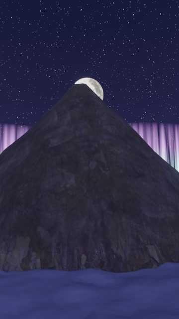
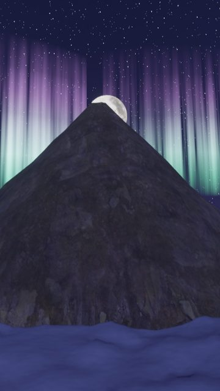
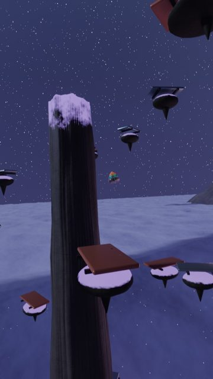
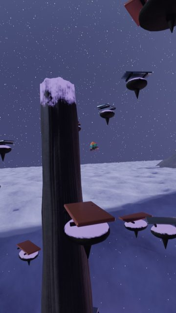
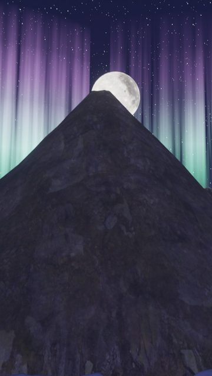
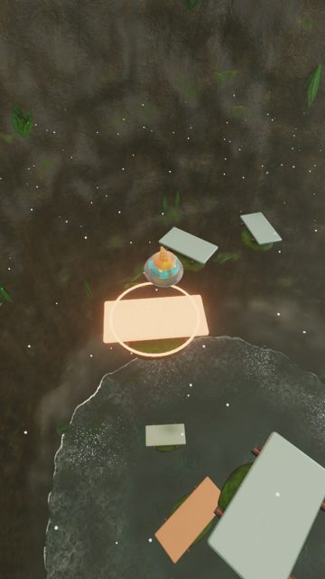

| 確認項目 | 結果 |
|---|---|
| v2の「次に直すこと」5つ | v3から引き継ぎ済み（霧の白0.5秒・オーロラ近く明るく・島は小さく暗く・鉄琴の金属感・滝つぼの泡と水しぶき・低音の板は大きく朱に） |
| 写真素材（Poly Haven／ambientCG CC0）を岩・コンクリ・苔・泡に | 前半で効いている（300コマ目） |
| 月は NASA CGI Moon Kit の色と高さ | 1150・1200コマ目の月 |
| オーロラが画面に入り、端が自然 | 直した（1150・1200コマ目） |
| 80点以上で納品 | 70点・未納品。次に直すこと6つをREADMEへ |